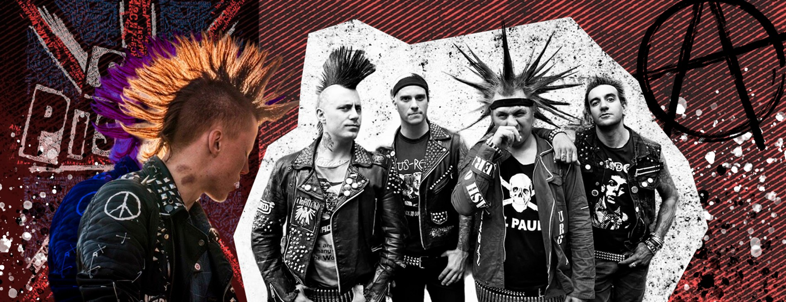

Як зрозуміти до якої субкультури відноситься ваша дитина?
«Якщо дитина малює все чорним олівцем, це не означає, що має депресію», — розповідають експерти про сучасні молодіжні спільноти. Події останніх тижнів, пов'язані з міфічним «ЧВК Редан», наочно продемонстрували, що ми не знаємо, якими субкультурами мешкають підлітки. «Віка Нейкус» вирішила розібратися та заповнити прогалини у знаннях про молодіжні субкультури. Подробиці про те, куди поділися панки та готи, хто керує вулицями, чим займаються школярі у вільний від навчання час і чи є у батьків приводи для занепокоєння, — у моєму огляді.
«Є такий феномен, як моральна паніка, яку влаштовують довкола тих чи інших подій. Висмикнули одне якесь співтовариство та гіпертрофували його значущість», — пояснюють експерти те, як ще кілька тижнів тому всю країну, та й світ теж, захлеснула епідемія так званого «ЧВК Редан». Новини про цей нікому раніше невідомий молодіжний рух звучали звідусіль: з вулиць, зі шкільних кабінетів, лише розігріваючи інтерес до явища, що налякав батьків. Але пройшов буквально один тиждень, і про дітей у чорних худі, футболках з павуками та клітчатих штанях усі забули. А в повітрі повисло питання: а чи взагалі був цей «ЧВК Редан»?
На карті молодіжних спільнот Білої Церкви є багато неформальних об'єднань. Ми спробували вивчити їхню природу і дати коротку характеристику кожному. У цьому нам допомогли представники молодіжних спільнот, а також експерти. Багато хто з них погодився на розмову лише на умовах анонімності
Підлітки 14-18 років
Довге фарбоване волосся, кофти з павуками та клітчаті штани
Бійки з офніками про яких ми розкажемо трохи далі
Часто можна почути, що усі сучасні молодіжні рухи називають субкультурами. «Субкультури виникли під час індустріального суспільства. Представниками їх були діти, які хотіли протистояти класовій позиції своїх батьків. Сутність субкультури завжди мала частково політичний підтекст, пов'язаний із певною протидією. Що таке субкультура? Це група людей, спільнота, яка відрізняється від традиційної культури та протистоїть їй, а також має свої норми та цінності»
Окремо взяті молодіжні субкультури в їхньому традиційному розумінні завжди мали певні межі: норми поведінки, системи цінностей, естетичні уподобання в музиці, одязі і т. д. — тобто те, що кардинально виділяє якусь конкретну групу молодих людей серед інших спільнот. Наприклад, у гопників (вуличних хуліганів) є своя унікальна мова спілкування, якою відразу ж можна ідентифікувати їх представників
Представники цієї спільноти вже настільки щільно увійшли до масової культури, що про них знімають фільми та серіали. У той час, як деякі молодіжні рухи народжуються, живуть певний час, а потім вмирають, спільнота гопників залишається практично в незмінному вигляді. У Білій Церкві цей рух продовжує існувати, незважаючи на активну боротьбу з ним.
За словами одного з наших джерел, більшість білоцерківських гопників так чи інакше пов'язані з криміналом та відповідною субкультурою кінця минулого століття. Звичаї проводити сходняки та збирати гуртки пішли з тюремної культури. У цій групі є правила поведінки і закони, є ієрархія, власну мову, стиль тощо.
Вікових обмежень немає, але зазвичай це повнолітні люди
Спортивний одяг, лисі голови та шапки
Свій стиль розмови та сємки під парадним
Опитані нами експерти описують представників цієї спільноти як свого роду спотворене відгалуження навколофутболу. Власне, від цього й походить назва спільноти: від скорочення «оф». Суть руху зводиться переважно до темної сторони свого прабатька — агресії, бійок, що виходять на перше місце. Офникам начхати на футбол, їм головне — побитися, бажано ще зняти це все на камеру, накласти на веселу і задерикувату музику в стилі Макса Коржа і викласти в соцмережах. Жертву агресії часто знаходять спонтанно прямо на вулиці.
Зазвичай офніки пересуваються компаніями по кілька людей, діють переважно групою. Часто офніків прирівнюють до гопників. Обидва рухи справді об'єднує, наприклад, нелюбов до правоохоронних органів. Але відмінностей все ж таки більше: починаючи від стилю та одягу закінчуючи мотивацією.Якщо класичний гопник має якусь ідеологію в дусі «ми живемо в несправедливому світі за несправедливими законами», то офнік має сенс існування один — веселе проведення часу під навколофутбольним гаслом «твори бардак, ми тут проїздом». В одязі ж офнік відрізняється від інших тим, що вважає за краще носити дорогі бренди, підвертаючи штани. Найбільш популярним серед них є бренд Stone Island, також допустимі Fred Perry та Tommy Hilfiger.
Хлопці віком до 18 років
Лисі хлопці у брендовому одязі
Фраза "Пішли битися" все про них говорить
Альтушками називають молодих дівчат, які люблять яскраво одягатися, поєднуючи в зовнішньому вигляді все, що не поєднується. Це такий спосіб самовираження, бунт проти засад, наприклад, проти шкільної форми. Цей рух зародився і став модним паралельно з тим, як зростала популярність TikTok.
Прихильники цієї спільноти часто комбінують стилі з інших рухів — готовий, що люблять чорні тони, емо, що фарбують волосся в рожевий, панків, що вибривають на голові ірокези, і т. д. Якщо ви побачите на вулиці дівчину в яскравому образі, що різко виділяється на тлі інших , то, швидше за все, перед вами альтушка. І це, як правило, завжди про стиль. Найчастіше представники цієї спільноти принагідно є адептами наступного руху з нашого огляду.
Дівчата підлітки не старше 20 років
Яскраві одяг, волосся та макіяж
Іноді досить агресивні та ображенні на життя дівчата, але частіше досить милі, також знімають у тікток
Про анімешників активно заговорили одразу після історії з «ЧВК Реданом», хоча за фактом існують вони давно. Той самий гучний місяць тому співтовариство — один із напрямків анімешного руху, у його назві відсилання до японського комікса, в якому описано злочинне угруповання «Геней Редан», і аніме Hunter x Hunter. У цьому серіалі (у анімешників не прийнято називати це мультфільмами, тому що найчастіше сюжети, незважаючи на специфічний характер ілюстрацій, у них далеко не дитячі) події проходили у вигаданому світі, де й існувало дане угруповання, що складається з грабіжників та вбивць із надздібностями .
Ця банди, яка, до речі, навіть не є головним героєм аніме, мала свої відмітні знаки на кшталт павука, якого й скопіювали українські підлітки. Анімешників, у тому числі за їхніми словами, часто принижують і булят за зовнішній вигляд. А він у них часом буває специфічний: шанувальники аніме відрощують і фарбують волосся в чорний або білий колір копіюють стиль одягу своїх кумирів. Улюблену фразу офніків чи гопників — «поясни за шмот» - анімешники чують на свою адресу часто.
Учасники цієї спільноти зазвичай підлітки(14-18 років) але є вийнятки
Різнокольорове волосся, неформальний одяг
Зазвичай це милі люди, які помурчать в діскорді та скинуть ніжки
Назва спільноти походить від англійської dead inside, що означає буквально «мертві всередині». Вже за найменуванням зрозуміло, що представники руху найчастіше «сумні люди» із середовища або анімешників, або геймерів Dota2. Власне, появу спільноти часто і пов'язують або з популярним гравцем, який зробив однойменне татуювання, або з аніме «Токійський гуль»Не вдаючись у напівміфічний сюжет цього вже досить старого аніме, зазначимо лише, що там є персонаж зі специфічною чубчиком, що падає на очі, який любить носити чорно-білий одяг. Так ось саме такий стиль і віддають перевагу представникам дід інсайд. Інший спосіб розпізнати вихідця з цієї спільноти — заглянути на його сторінку у «Instagram», де напевно на аватарці стоїть персонаж «Токійського гуля», а в статусі так і прописано: «дед інсайд» чи «мертвий усередині».
Це співтовариство відносять до депресивних, котрим вважається нормою протистояння загальну думку, підкреслення власної індивідуальності, яку довкола неспроможна зрозуміти. Це теж свого роду спосіб заявити оточуючим себе, умовно, через позицію жертви обставин. Чи жарт, але в медичному словнику при натисканні на вкладку dead inside вас перенаправлять на сторінку зі статтею про клінічну депресію. Хоча, за словами наших співрозмовників, загалом цей меланхолійний рух є досить нешкідливим. А останнім часом взагалі до нього ставляться з гумором, якоюсь іронією
Хлопці віком 15-18 років
Волосся та одяг чорного або білого кольору
Депресивні люди які грають в доту